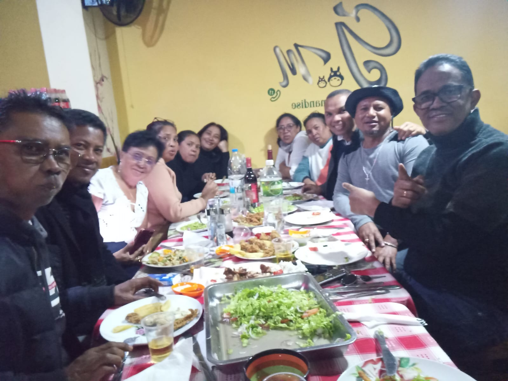
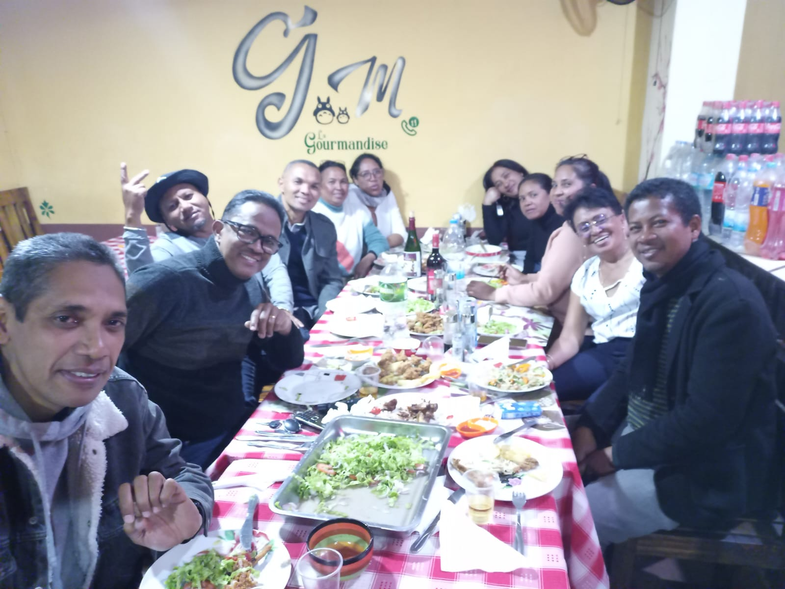
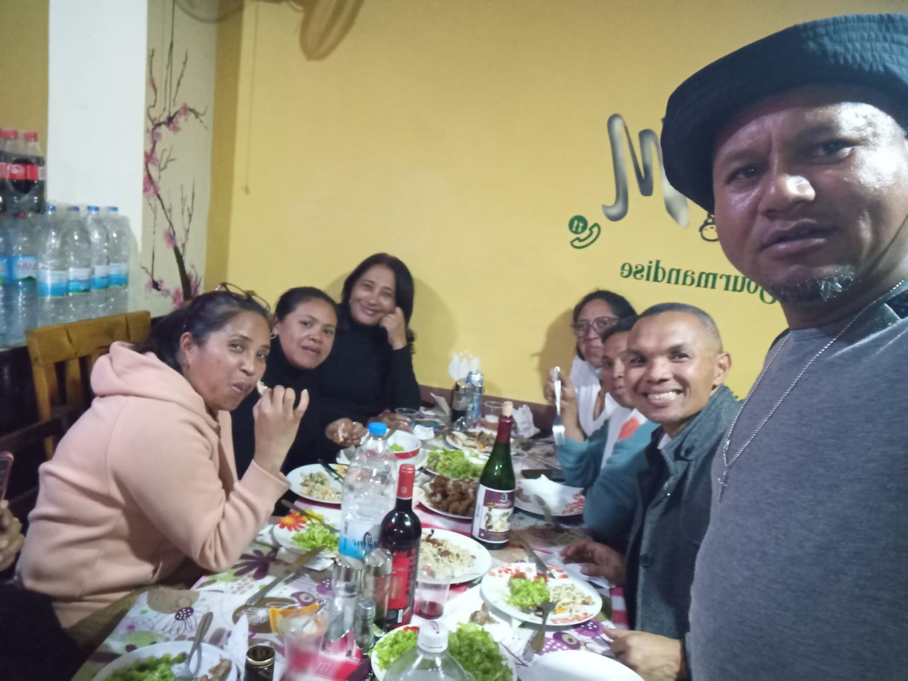
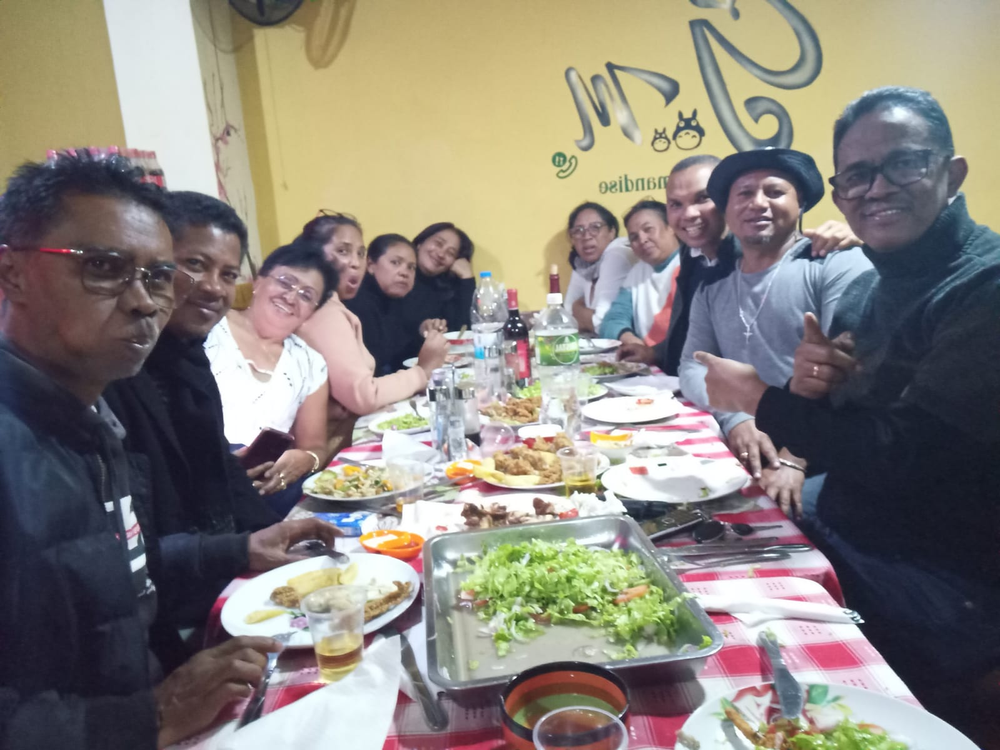

Harmonie sacrée
Un instant suspendu dans la cathédrale d’Andohalo

Répétition en lumière
Le souffle du chœur dans l’intimité d’une salle

Portrait du chef
L’âme musicale du C.A.S.T. en un regard
Origines et Vision
Fondé en mars 2003 à Antananarivo, le C.A.S.T. est un ensemble vocal dont l’essence réside dans le souffle sacré de la musique. Il rassemble des choristes issus de toutes les Églises chrétiennes du FFKM — Fiombonan'ny Fiangonana Kristiana eto Madagasikara — témoignant d’une unité œcuménique profonde.
Son Excellence Liva ANDRIAMANALINARIVO, président fondateur, a insufflé une vision audacieuse : faire entendre, à travers la voix humaine, l’élévation de l’âme, dans le respect des traditions chrétiennes et culturelles malgaches.
À ses côtés, Maître Éric RASAMIMANANA, cofondateur et directeur musical, enracine chaque interprétation dans une rigueur musicale exigeante et un amour sincère du sacré.
Lieux d’interprétation
Le C.A.S.T. fait vibrer les murs des églises et cathédrales emblématiques de la capitale :
- Cathédrale d’Andohalo
- Paroisse Internationale Andohalo
- Église catholique de Faravohitra
- Église catholique Saint Michel Itaosy
- FJKM Itaosy
- FJKM Ambohitinibe Andakana
- Et bien d’autres lieux chrétiens
Chaque voûte devient chambre de résonance pour des œuvres inspirées.
Répertoire
Le répertoire du chœur embrasse les chefs-d’œuvre de :
- George Frideric Handel
- Joseph Haydn
- Wolfgang Amadeus Mozart
- Johann Sebastian Bach
- Antonín Dvořák
Il s’ouvre également à des compositions sacrées malgaches contemporaines de :
- Rémi Andriantsoavina
- Solo Rakotoarimanana
- Zo Maminirina
- Éric Rasamimanana
Collaborations musicales
Le C.A.S.T. collabore avec des musiciens classiques professionnels de haut niveau, sous la direction du maestro Casimir R. et du Quatuor Squad, dont la sensibilité et la rigueur apportent force et justesse à chaque interprétation.
🎥 Galerie Vidéo du C.A.S.T.
Répétition du C.A.S.T. – ambiance studieuse
📷 Galerie Photo


